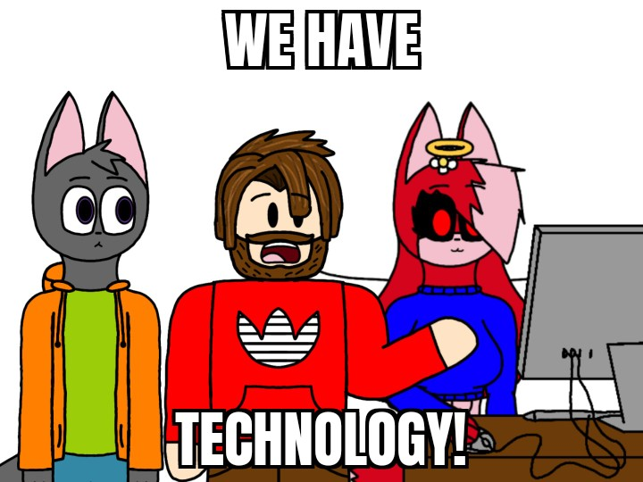

YouTube(W.I.P.) [DISABLED]
Twitter/X(W.I.P.) [DISABLED]
Facebook(W.I.P.) [DISABLED]
Instagram(W.I.P.) [DISABLED]
TikTok(W.I.P.) [DISABLED]
DeviantArt(W.I.P.)[DISABLED]
Sketchers United
Newgrounds(Finished but for profile pages is unfinished)
(Note: Newgrounds? You can't turn off if you use it and it's not necessary,
Newgrounds.com
is Fum. ¯\_(ツ)_/¯)
Advanced options
Access restriction mode
YouTube
Twitter
Facebook
Instagram
TikTok
DeviantArt
Sketchers United
Newgrounds
Discord
Reset settings

(We have TECHNOLOGIA!!üó£Ô∏èüî•)
Note: This left character "Pieterson" belongs to @PietersonOficjal.